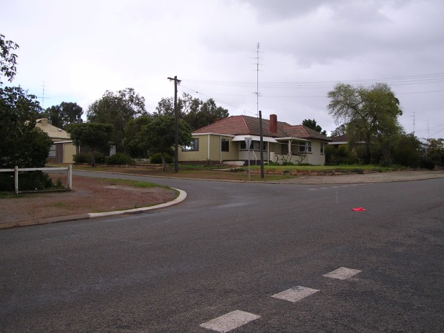
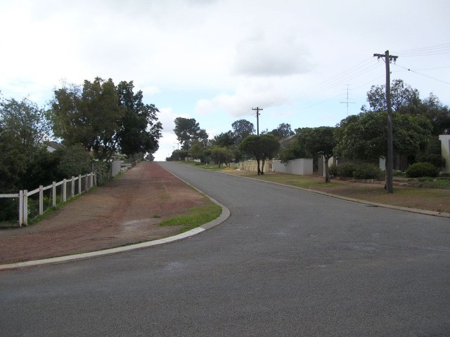
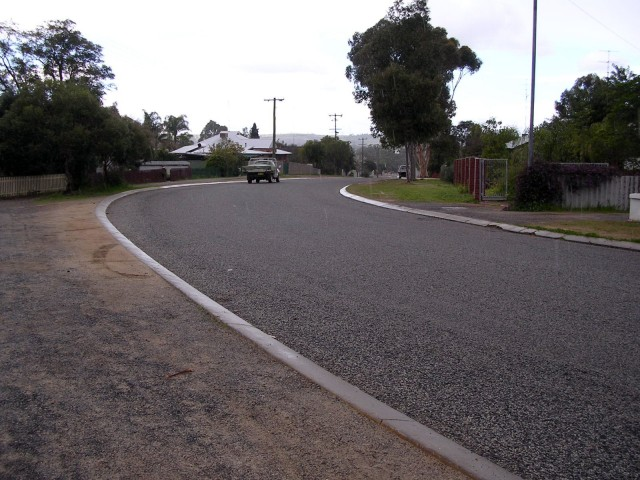
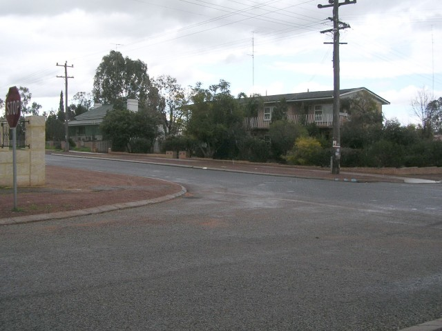
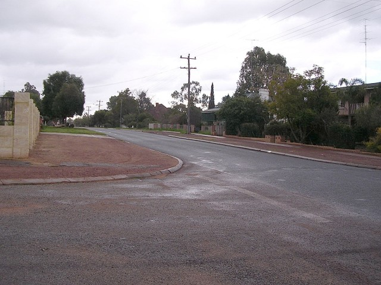
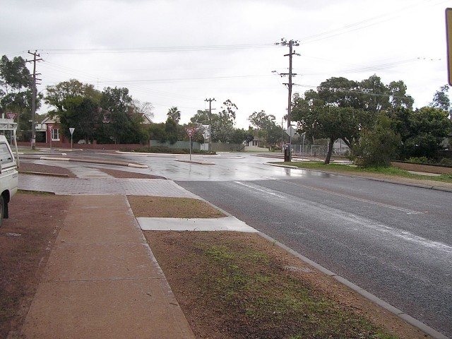
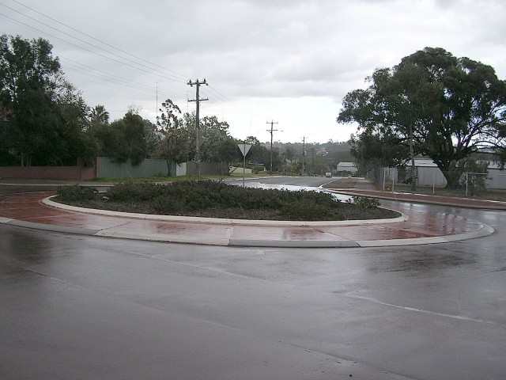

Numbers and arrows on the map represent the location and direction in which the photos were taken. Click the hyperlinks above to view the photographs.
Northam (Town Circuit) - Selby via Gregory and Burgoyne to Chidlow
|| Contents || Chidlow / Wellington / Gardiner | Selby / Gregory / Burgoyne / Gardiner || Home ||
Numbers and arrows on the map represent the location and direction in which the
photos were taken. Click the hyperlinks above to view the photographs.
Return to racingcircuits.net's Photo Archive Main Index

9 - Entry of the left turn into Selby
Street.

10 - Exit of the left turn into Selby
Street.

11 - ‘S’bend Selby St. to Gregory
St.

12 - Exit of the ‘S’bend, Selby
St. to Gregory St.

13 - Entry of the left turn into Burgoyne
St.

14 - Exit of the left turn into Burgoyne St.

15 - Entry of the right turn into Chidlow
St.

16 - Exit of the right turn into Chidlow St.
Photographs and Text ©Neil Fackerell. Reproduced here with kind permission.